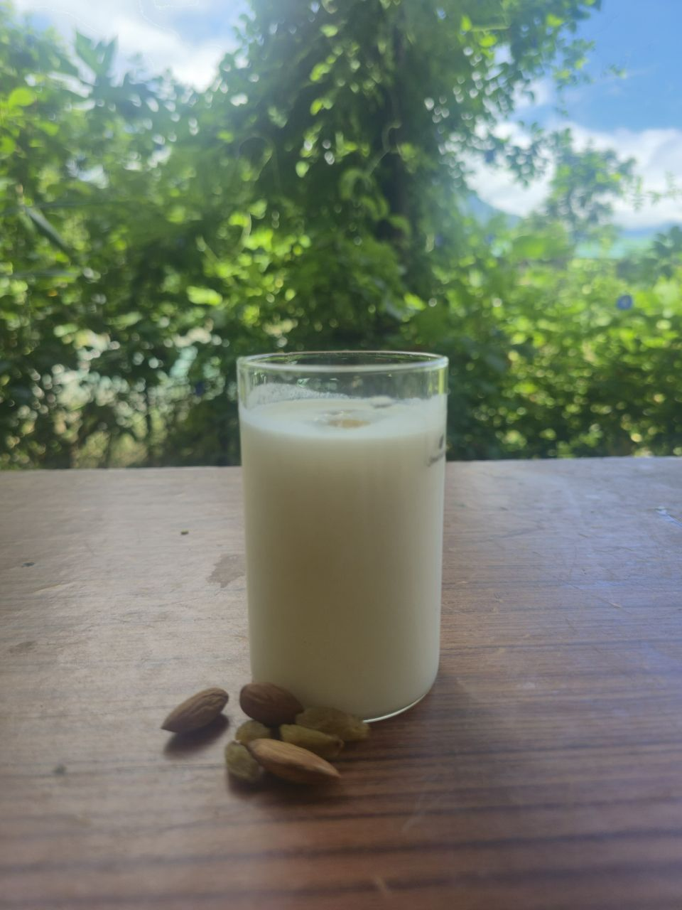

Our Refreshing Sugar-Free Lassi
Enjoy the pure, traditional taste of lassi without added sugar. Our sugar-free lassi is a perfect blend of tangy yogurt and natural sweetness, offering a guilt-free indulgence that is both healthy and delicious.
Positive Impact on Health
Opting for a sugar-free lassi is a smart choice for your well-being.
- Blood Sugar Management: It's ideal for those watching their blood sugar levels, including individuals with diabetes.
- Weight Management: By cutting out refined sugar, it helps reduce calorie intake, supporting a healthy weight.
- Digestive Health: The probiotics in yogurt promote a healthy gut microbiome, which is essential for proper digestion.
- Hydration: Lassi is a fantastic way to stay hydrated, especially in warm weather, while also getting essential nutrients.
Traditional Method: How We Make It
Our sugar-free lassi is prepared using a simple, authentic method that respects the natural goodness of the ingredients.
- High-Quality Yogurt: We start with fresh, thick, and unsweetened curd (dahi) made from pure milk.
- Gentle Churning: The curd is placed in a traditional mathani (wooden churner) or a blender and churned gently until it becomes smooth and creamy.
- Natural Sweetness: Instead of sugar, we add a very small amount of natural, zero-calorie sweetener (like stevia or erythritol) or a hint of fruit essence (like a ripe banana or mango pulp) to achieve a pleasant, sweet taste without the guilt.
- Perfect Texture: A splash of water or milk is added to get the desired consistency, making it easy to drink while maintaining its rich flavor.
- Final Touches: It is served chilled, sometimes with a sprinkle of cardamom or a mint leaf for an extra burst of freshness.